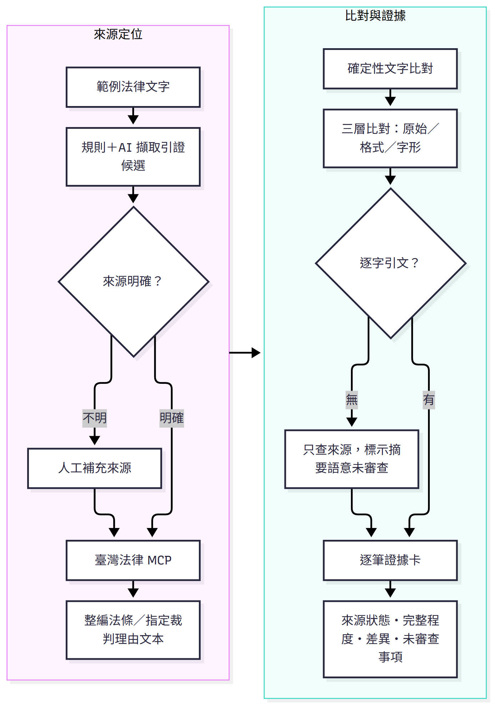

AI 產生的法律回覆
內容可選取複製但不可修改，不是法律建議。
唯讀內容
回覆結束
來源存在、文字一致，不代表法院採納該說法，也不代表適用你的案件。
流程展示原型使用固定案例完整呈現不同查核狀態；內容不可修改、不會上傳，也不即時呼叫 AI 或法律資料服務。
找到來源只是開始。一起核對原文、看見差異，也清楚標出還不能判定的部分。
內容可選取複製但不可修改，不是法律建議。
唯讀內容
來源存在、文字一致，不代表法院採納該說法，也不代表適用你的案件。
系統先由規則與 AI 找出可能的法條、判決和引用文字。使用者確認後，法律資料服務（MCP）查找來源，再由程式依固定規則核對文字。
本頁刻意使用固定案例展示上述操作流程，以完整呈現來源查得、文字差異、查無、內容不完整與無法判定等狀態。AI 回覆、引用、來源片段與結果均已預先準備，不代表即時 AI、MCP 或比對引擎已執行；其中查無及在完整內容中找不到引用為明確標示的模擬案例。
AI 只協助找出可能的引用，不負責最後判定。系統不判斷摘要是否正確、法院是否採納、事情發生時適用的法律版本（行為時法），也不判斷法律是否適用個人情況。尚未完成 24 筆固定案例與完整流程測試，不宣稱準確率。
法規與判決連結會另開新分頁。除你主動開啟連結外，此展示頁不會向外部服務傳送資料。
